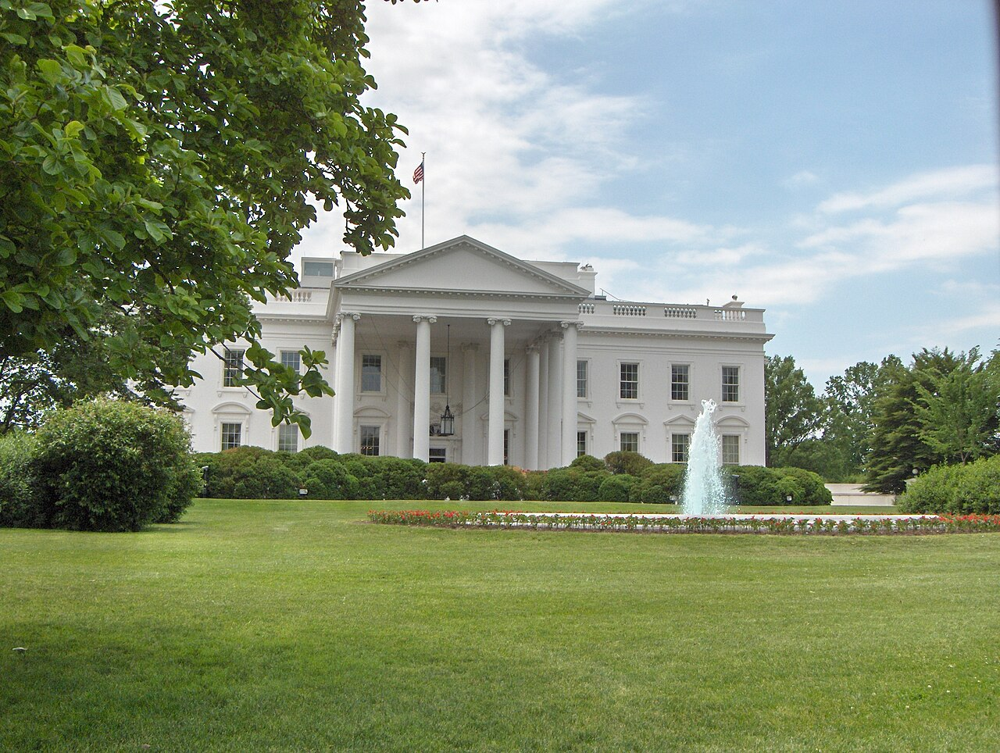
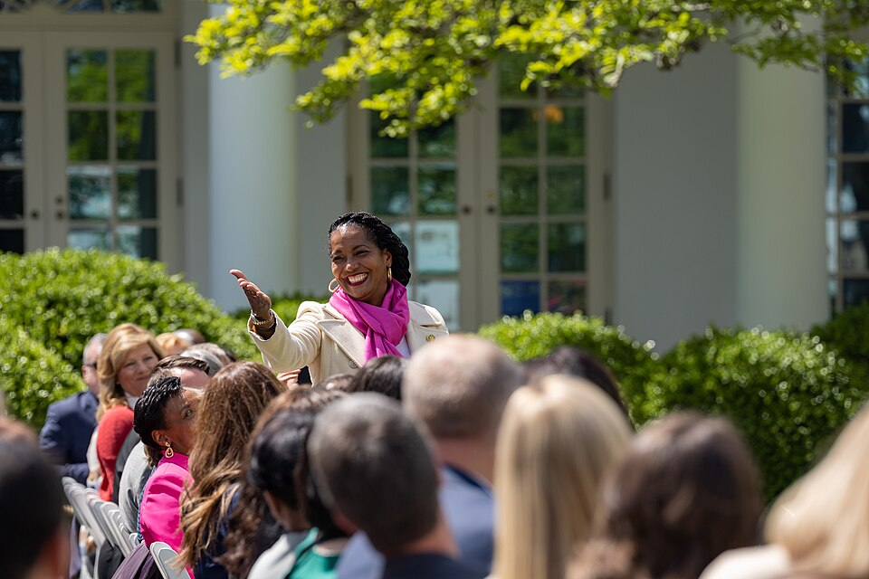
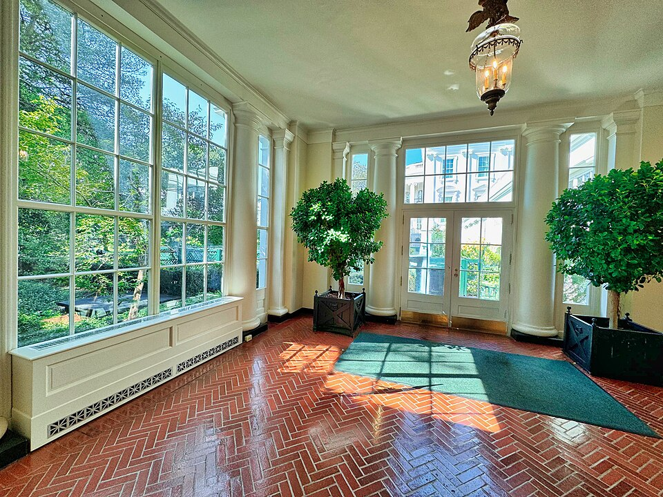

卷·31 · 白宫改造记 · 第一手档案馆金色的房子
玫瑰园铺上石板、椭圆办公室镀上金色、东翼让位给一座造价三级跳的舞厅——第二任期把"人民的房子"当成了最大的工地，本馆逐项登记日期、金额与审批状态。
工程台账的纪律是把"官方口径"与"第三方口径"并排放：造价数字以官方报价为起点、随报道与国会侧文件滚动更新，每一级都注明出处；审批状态写到本馆基准日为止——本页核验基准日为 2026-10-06，司法线仍在滚动，以下一轮复核为准。与卷·04 白宫岁月分工：那里写任期叙事，这里存建筑与工程台账；审美源流的对照只指路不重复（卷·02/卷·21）。审批程序与文保团体的完整双写，归下一轮增厚。

2025 年 8 月上旬（约 8 月 6 日呈现），白宫玫瑰园的经典草坪被整体换成浅色石板——NPR 的报道直接以"Mar-a-Lago 风格"点题（海湖庄园的庭院语汇搬进了白宫，审美源流见卷·02/卷·21）；据报道造价约 190 万美元，边缘的标志性玫瑰与灌木保留。他给铺装的理由在早前（4 月）就说过：活动日草坪被"泡得湿透"（soaking wet）——从观礼台的 practical 焦虑，到一块块白色石板，玫瑰园用十七年（肯尼迪时代定型的现代形态）长成的样子，一个夏天就换了地面。

第二任期最大的工程是白宫舞厅（White House Ballroom）——规划约 9 万平方英尺，选址东翼区域。他的原话在卷·09 社媒馆有原件：效果图配文称它将是"有史以来建造的同类建筑中最伟大的一座"，取代"很小、破旧、反复重建过多次的东翼"，并称舞厅是"150 多年来历代总统的夙愿"——本馆全文照录，史实核查留给他自己。
造价三级口径（每一级注明出处）：官方起点 2 亿美元（2025-07 官方口径）→他本人 2025-12 提到 4 亿→国会侧民主党报告（克拉克众议员办公室）估算至 6 亿、并称纳税人可能承担部分（《华盛顿邮报》2026-08 报道白宫工程总开支至少 9 亿美元）；政府的口径始终是私人捐款承担、不动纳税人资金——批评者的"taxpayers on hook"与之并陈。
拆除与审批：东翼拆除于 2025-10-20 前后开工——事先未获国家首都规划委员会（NCPC）批准，白宫主张拆除不属其审批范围（双方口径并陈，完整审批线归下轮）；2026-01，白宫改口称保存东翼"不经济"（结构老化口径）。司法战（复核到基准日）：2026-04 有报道称工程获"最终批准"且范围价格扩大；2026 年 8 月，联邦上诉法院裁定工程需国会授权、下令停工——最高法院允许临时继续，上诉令设 2026-08-21 截止；截至本馆基准日，三名上诉法官正听审"工程能否继续"，政府以国家安全框架主张不需国会授权（ABC 附属台 2026-10 报道在案）。一座房子的合法性，此刻悬在三个人手里。
椭圆办公室金化贯穿 2025 全年：《卫报》称之为"extreme goldening"（极致镀金）——天花金线、门框描金、壁炉架上传统瑞士常春藤让位给金浮雕杯器、二十余幅总统肖像换装镀金画框并配洛可可式饰件、门外的总统徽记也换成金色（卫报/商业内幕前后对比口径）。最妙的一行档案：白宫旁的"People's House"博物馆把自己的复刻椭圆办公室照着改了一版（美联社报道）——连复制件都在追赶原件的速度。
小工程一览：白宫官方 2025-10-21 宣布新网球馆落成（他第一任期 2020 年已建过一版），网球场翻新、"孙辈花园"升级同批官宣（whitehouse.gov 原文在案）；北草坪外的旗杆、界墙等零星改造散见报道，本馆按"有官方声明才立卡"的原则收录至此。
把本馆的工程排成一列，会看到一条清晰的美学迁移路线：特朗普大厦 1983 年的门厅（金砖大理石，卷·02 已核）→海湖庄园的金厅与白色石板庭院（卷·21 资产台账在册）→白宫的镀金椭圆办公室与石板玫瑰园——私人空间的语汇，十年间逐步覆盖了公共空间的经典形态。建筑评论界给这条路线起过不少名字，本馆不代拟形容词，只把三个坐标钉在同一页上：1983、1985、2025。评论史的辑录归下一轮增厚（含文保团体反应双写）。
把第二任期的工程放进两百年尺度，结论先立住：白宫从来不是一座"完工"的建筑。纵深线上最重的三笔（公开史料逐条可查）：杜鲁门重建（1948–1952）——老楼濒临坍塌（地板下陷、木梁失稳，"垂死的二楼"），杜鲁门下令整体掏空重建，总统一家在对街布莱尔国宾馆一住四年；《纽约时报》后来的复盘说得直白：今天的白宫是"历史外墙包着一座现代钢架"——内核几乎全是新的。罗斯福泳池→布雷迪发布室——小罗斯福 1933 年在西露台建室内泳池（小儿麻痹水疗之用），1970 年尼克松把它填平，改建成今天记者们熟知的詹姆斯·布雷迪新闻发布室——泳池变讲台，媒体与白宫的关系从此有了固定布景。
更细的体育线同样代代相加：白宫网球场源自老罗斯福时代，艾森豪威尔添了迷你高尔夫，奥巴马在网球场上加了篮球筐线（多用途场，广泛公开记载级口径）。历届总统都在这座房子上留下自己的手笔——但有一个区别值得台账记下：杜鲁门的重建有国会授权与完整公共程序，历时四年；本卷登记的第二任期工程，正在为"要不要走同样的程序"打官司（本馆第二、六节）。
程序线：国家首都规划委员会（NCPC）常态下审查华盛顿联邦地产的建设项目；白宫的立场是东翼拆除不属 NCPC 审批范围（本馆第二节已录），因此工程在拆除阶段未走委员会程序；文保方与多位历史学者主张大规模改建依法应经公共审查——"该不该走程序"本身就是法律战的核心争点，目前悬在上述法院（本馆第二节司法线，单点维护不重复）。众议院自然资源委员会民主党人 2025-10-23 致信质询审批程序——特别点出工程在政府停摆期间持续推进（信中引述的造价为约 2.5 亿美元口径——本馆造价台账因此再多一行第四方数字，如实并陈）。
文保线：国家历史保护信托会（National Trust for Historic Preservation）2025-10-21 发表官方声明，原话口径："我们恳请政府与国家公园管理局暂停拆除，直至舞厅方案走完所需的公开审查程序"（savingplaces.org 声明原文）；随后该组织提起诉讼，主张工程绕过了 NCPC 与公开审查——政府方的回应是主张信托会不具备诉讼资格（standing）；2026 年 8 月最高法院线上，文保团体敦促大法官叫停政府的继续施工请求（PBS/国会山报口径）。一条装修新闻，走出了文保法诉讼的全部三级台阶——这在白宫史上没有先例（媒体通行表述）。
本馆只辑录已核的三条，逐条注明归属，编辑部不站队：《卫报》（2025-09）为椭圆办公室的金化造了流传最广的词——"极致镀金"（extreme goldening）；NPR（2025-08）以"Mar-a-Lago 风格"为题报道玫瑰园石板化，把私宅语汇写进了公共园林的标题；美联社则记录了最安静也最锋利的一条——白宫旁的"People's House"博物馆默默更新了自己的复刻椭圆办公室，让展品追赶现实（本馆第三节）。支持方的通行口径与此相对：翻新是白宫应有之义（第五节的杜鲁门先例）、资金来自私人捐款、舞厅是"历代总统的夙愿"（其本人原帖，卷·09 在案）。两排引语并排躺着，中间没有编辑部的判词——评论史还在写，本馆的台账也是。
这一馆是全站最"新"的台账——别的卷宗写已完结的历史，这一卷的工程一半还围着安全网。造价口径三级跳（2 亿→4 亿→6 亿）让每个数字都带着出处活着；东翼的拆除令、上诉法院的停工令、最高法院的临时放行，让"装修"两个字第一次在白宫有了案卷号。房子还是那个地址，但本馆基准日之后，它长成什么样、以什么手续长，都还是进行时。
本馆收录 3 项工程台账 + 1 条造价四级口径 + 1 条司法战线 + 历届对照/程序与文保双写/评论史三节，全部依据官方声明、国会侧文件与公开报道；审批与文保双写归下一轮增厚。
任期叙事：卷·04 白宫岁月与时政进程 卷·07 第二任期；审美源流的商业原点：卷·02 商业帝国与卷·21 资产版图；舞厅效果图的社媒原帖：卷·09 社媒馆；同类"批准权"结构：卷·30 第四权之战第五节。
- NPR 2025-08-23（玫瑰园石板化完成、Mar-a-Lago 风格）；USA Today/Newsweek（造价约 190 万美元口径）；"soaking wet"理由为其 2025-04 公开表态（RocketCityNow 等报道）。
- 造价三级口径：官方 2 亿美元（2025-07）→本人 4 亿（2025-12）→国会侧民主党报告至 6 亿（克拉克众议员办公室公开件）；《华盛顿邮报》2026-08（白宫工程总开支至少 9 亿美元）；政府"私人捐款承担"口径与批评者"taxpayers on hook"并陈。
- 东翼拆除 2025-10-20 前后开工、事先未获 NCPC 批准（白宫主张不需其批准）；2026-01 白宫"不经济"改口；约 9 万平方英尺——路透/ABC 等多家媒体口径。
- 司法战：2026-04"最终批准"报道；2026-08 上诉法院停工令（需国会授权）与最高法院临时放行（截止 2026-08-21）；三法官上诉庭听审与政府"国家安全"框架——ABC 附属台 2026-10 报道（基准日前两日）。
- 椭圆办公室金化：《卫报》2025-09"extreme goldening"；商业内幕 2025-04 前后对比；"People's House"博物馆更新复刻——美联社报道。
- 网球馆与孙辈花园：白宫官网 2025-10-21 官方公告（whitehouse.gov 原文在案）；2020 年第一任期网球馆先例为广泛公开记载。
- 舞厅效果图配文原帖：见 posts.html 卷·09（本站已收录的一手帖，R45 采集）。
- 历届改造对照：杜鲁门 1948–1952 整体重建与布莱尔国宾馆四年（《纽约时报》2015-05-09 复盘"历史外墙包着现代钢架"；NPS/白宫博物馆公开史料口径）；罗斯福 1933 室内泳池→1970 尼克松改建布雷迪新闻发布室；网球场（老罗斯福时代）/迷你高尔夫（艾森豪威尔）/奥巴马篮球筐——极广泛公开记载级口径。
- 审批与文保双写：国家历史保护信托会 2025-10-21 官方声明（"暂停拆除，直至走完公开审查程序"原话口径，savingplaces.org）；Trust 诉讼与政府"无诉讼资格"抗辩、2026-08 最高法院线——PBS/国会山报及宪法类机构档案口径；众议院自然资源委员会民主党人 2025-10-23 致信（信中造价约 2.5 亿美元口径·停摆期间施工质询）。
- 评论史辑录三条：《卫报》2025-09（"extreme goldening"）；NPR 2025-08（"Mar-a-Lago 风格"）；美联社（People's House 博物馆更新复刻）——观点归属各媒体，编辑部不站队。
下期预告 · 第一手档案馆·卷·32《边境与驱逐》：出生公民权的诉讼长跑、ICE 的账本与一座"鳄鱼恶魔岛"——把第二任期最大的内政工程做成一份可以对表的台账。